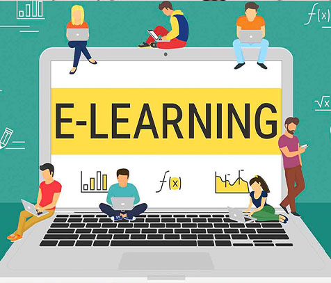
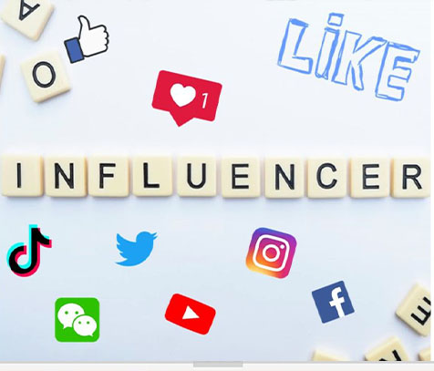
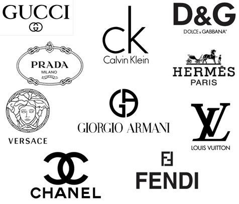
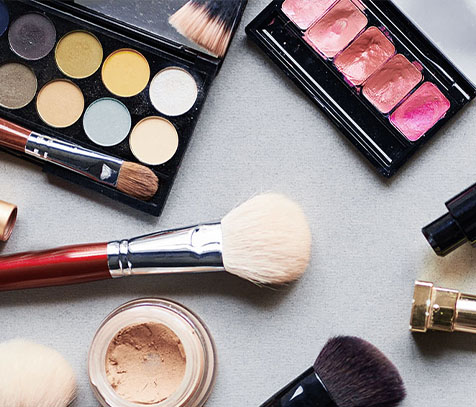
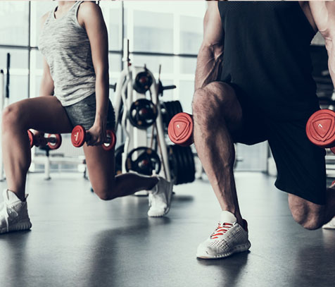
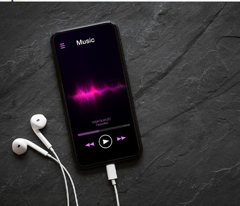
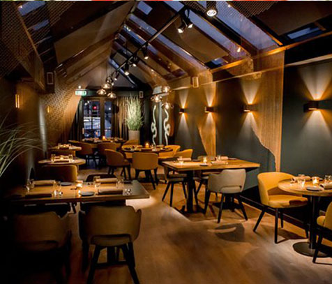
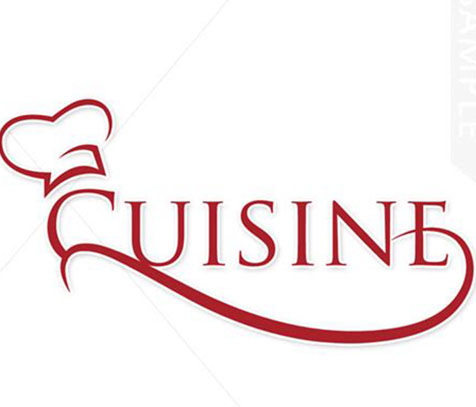
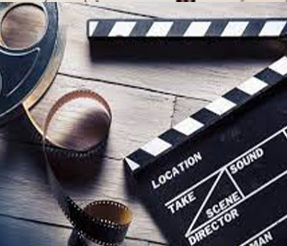

Blog
Un blog est un outil que chaque site doit avoir. Mais il existe aussi des blogs autonomes dont le contenu constitue le cœur du site web. Vous pouvez créer un blog sur presque tous les sujets - vos hobbies, votre expertise pro, votre famille etc. Si vous avez une belle plume et que vous connaissez bien votre domaine, votre contenu peut faire sensation. Vous pourriez même parvenir à monétiser votre blog et à faire de la rédaction votre job à plein temps.
Site eCommerce
Vous avez peut-être des objets faits main ou des produits liés à votre activité à vendre. Quelle que soit votre spécialité, boostez votre business en créant une boutique en ligne. Ajoutez des fonctionnalités essentielles telles que le checkout et les modalités de paiement pour avoir un site eCommerce professionnel.
Site d’eLearning
Si vous êtes un expert dans un domaine particulier, que vous avez de l'expérience et des conseils à partager, pensez à créer un site d’eLearning. Il peut inclure des vidéos sur n'importe quel sujet, du contenu académique et des conseils pratiques. Attirez les internautes avec des vidéos gratuites et proposez-leur un forfait payant pour accéder à un contenu plus long et plus poussé.
Site de tutoriels

Créez un site web avec des tutoriels expliquant en profondeur un sujet spécifique. Choisissez un thème qui intéressera une quantité d’internautes pour accroître le nombre de visiteurs sur votre site. Utilisez divers formats de contenu : des vidéos, des infographies, des eBooks et des articles de blog.
Site d’influenceur
Si vous êtes un influenceur, vos réseaux sociaux ne suffisent pas pour consolider votre présence en ligne. Il vous faut votre propre site web. Il peut servir de pont entre vos différents comptes sociaux, permettant aux utilisateurs de naviguer facilement entre vos pages Instagram et Facebook, votre chaîne YouTube et votre flux Twitter. Un site internet est aussi idéal pour raconter votre histoire personnelle et permettre à vos followers de mieux vous connaître.
Site de mode
Que vous soyez modèle, styliste ou amateur de mode, un site dédié peut vous permettre d’exposer votre travail. Ajoutez de belles images mettant en valeur votre style pour attirer les internautes sur votre site. Selon votre activité, vous pouvez aussi donner des astuces pour trouver certaines pièces et pour les assortir. Pour vous aider à démarrer.
Site de beauté
Si vous aimez les cosmétiques, pensez à créer un site web pour partager des conseils beauté : maquillage, soins de la peau, coiffure etc. Ajoutez des images de haute qualité et intégrez des tutos vidéo téléchargés directement depuis YouTube, Vimeo ou d'autres plateformes.
Site immobilier
Pour les agents sur le terrain, avoir un site immobilier est indispensable pour exposer tous les biens gérés par l'agence. D’abord, choisissez l'un de ces templates de sites immobiliers et personnalisez-le selon vos besoins. Associez des photos attrayantes à vos annonces pour attirer de nouveaux clients.
Site de fitness
Si vous êtes un pro du fitness, vous pouvez créer un site pour présenter votre travail et votre spécialité, mais aussi pour atteindre les clients et booster votre business. Pour avoir l’un des meilleurs sites de fitness, ajoutez des vidéos de votre travail, des articles de blog avec des conseils d'experts et un système de réservation en ligne pour vos cours. En outre, un site web pro vous permettra de gérer vos réservations et votre emploi du temps, d’échanger avec les clients, de gérer les paiements et bien sûr, d’amener vos adeptes à se surpasser.
Site de tourisme
Si vous êtes un guide professionnel, vous devez avoir un site de tourisme. Ce type de plateforme doit comprendre un calendrier, une fonction de réservation et des infos sur votre expérience de guide touristique. Pour attirer encore plus de clients, synchronisez votre site avec votre flux Instagram pour montrer aux internautes ce que vous avez en catalogue.
Site de développement personnel
Ce type de sites peut porter sur la parentalité positive, la pleine conscience, le renforcement de la confiance en soi, etc. N'oubliez pas d'ajouter un blog avec des recommandations et des suggestions. Vous pouvez aborder une multitude de thèmes : techniques de motivation, conseils pour atteindre l'épanouissement et le bonheur etc.
Site pour vos événements
Bon, vous n’allez peut-être pas vous marier, mais vous avez d'autres occasions à venir. Si c’est le cas, vous pouvez créer un site d'événementiel pour des meetings d’entreprise, des festivals de musique ou des fêtes de quartier. Grâce à Wix Events, vous pourrez gérer votre calendrier, mettre à jour les infos de l'événement et vendre des billets, le tout sur une seule plateforme.
Site de musique
Conseil pro pour tous les musiciens confirmés ou en herbe : créez un site de musique. Non seulement vous pourrez promouvoir votre musique en ligne et toucher de nouveaux fans, mais il servira aussi de portfolio pour vos concerts. Il existe de nombreux templates de sites de musique pour vous aider à démarrer et vous inspirer. Pour intégrer votre propre playlist à votre site.
Site de restaurant
Pour les restaurateurs, avoir un site professionnel est tout aussi important qu’une bonne cuisine et une ambiance conviviale. Un site de restaurent peut vous aider à attirer des clients en affichant votre menu à côté de photos appétissantes des plats. N'oubliez pas d'inclure votre adresse, vos coordonnées et éventuellement l'histoire de votre entreprise. Pensez également à ajouter un système de réservation et de commande en ligne.
Site de cabinet d'avocats
Si vous avez votre propre cabinet d’avocats, il vous faut absolument un site internet. C’est essentiel pour atteindre les clients et établir votre fiabilité et votre crédibilité dans le domaine. À l'aide d'un template de site web de droit, n’importe quel cabinet peut créer son propre site professionnel.
Site de cuisine
Vous n'êtes peut-être ni restaurateur, ni chef, mais vous aimez cuisiner à la maison. Ou peut-être que vous aimez manger et faire part de vos expériences culinaires. Quoi qu'il en soit, vous pouvez créer un site dédié à la gastronomie. Songez à tenir un blog pour partager des recettes et vos découvertes avec vos lecteurs et pimentez-le avec de belles photos culinaires appétissantes.
Site de film
Vous êtes réalisateur ou producteur TV ? Si oui, voici quelques idées de sites web. Créez un site axé sur le contenu de votre film et mettez une vidéo sur la page d'accueil pour capter instantanément l'attention des internautes.
Site pour l'éducation
Pour un jardin d'enfants, une université, un collège ou un lycée, avoir un site peut être très utile. C’est un moyen d’informer les élèves et leurs parents des vacances, des événements sportifs, des spectacles scolaires, des collectes de fonds, etc. Il permet aussi de donner des infos essentielles sur l'établissement telles que les coordonnées et l’adresse. Parcourez ces templates de sites web éducatifs pour vous inspirer.